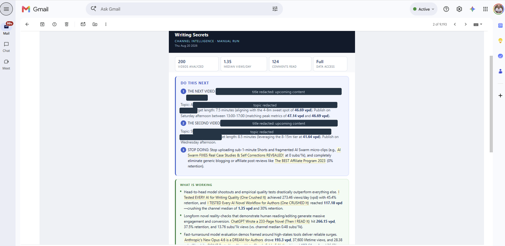
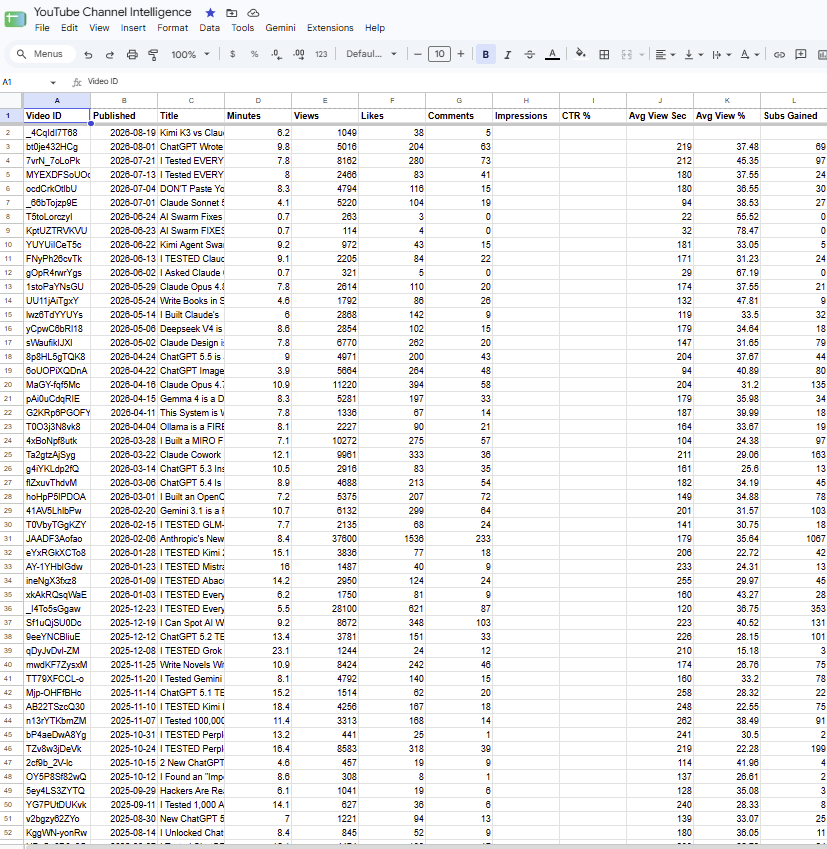

Build Lab / API · AI agent · Automation Shipped
YouTube Channel Intelligence — an analyst that runs itself.
Every time a video goes live, it pulls the channel's full history from two YouTube APIs, computes the statistics in code, and emails a report naming what is working, what is not, and the literal title to publish next.
The problem
Channel analytics tell you what happened, not what to do next. YouTube Studio shows numbers per video; deciding the next move means comparing videos against each other, normalizing for age, and spotting patterns across titles, lengths, and publish times. That is a weekly hour of manual work most creators skip.
The architecture
Google Apps Script bound to a Google Sheet. No server, no hosting cost, runs inside the owner's Google account.
- 01Detect
A lightweight poll checks whether the newest video ID has changed. If it has not, it stops there. No AI call, no email, about four API calls a day.
- 02Pull
YouTube Data API v3 for titles, tags, length, publish time, views, likes, and comments; YouTube Analytics API for retention, watch time, and subscribers gained.
- 03Compute
Statistics calculated in code, not by the model. Views per day since publish, medians by title feature, length bucket, publish day, and publish hour.
- 04Analyze
The model receives computed findings and a strict brief, and returns a report with a banned-phrases list to keep it specific.
- 05Record
Every run appends a snapshot row per video, so the sheet becomes a performance history rather than a current-state dump.
- 06Deliver
A formatted email with what is working, what is not, what viewers are asking for, and the next two video titles to publish.


The decisions that made it useful
- Statistics computed in code. First version handed the model 200 raw rows and asked for patterns. Language models are poor at arithmetic across hundreds of rows, so it produced plausible generalities. Moving every calculation into code changed the output from generic to specific.
- Age-normalized performance. Raw view counts always favor older videos. Ranking uses views per day since publish, so a video from last month can be compared honestly against one from two years ago.
- Medians, not averages. One viral outlier distorts a mean and makes every other video look like a failure.
- Videos under a week old are excluded from rankings. A one-day-old video divides by one day and outranks everything, which is an artifact rather than a finding.
- The model is told what it cannot see. When private analytics are unavailable, the prompt says so explicitly and forbids speculation about retention or click-through rate, and the email carries a visible banner. A confident report built on missing data is worse than a short one.
- Truncation fails loudly. Thinking tokens count against the output budget on current models, which silently cut an early report off mid-sentence. The run now detects that and sends a failure notice naming the cause instead of shipping half a report.
What it costs to run
Apps Script and both YouTube APIs are free at this volume. The upload detector uses roughly four of a ten thousand unit daily quota. Model spend is a handful of calls a week. The expensive part of most automations is the polling, so the design spends API calls only to answer one cheap question, and spends model tokens only when the answer changes.
What this does not share
- Channel revenue is pulled into the private sheet and never published, never appears in any screenshot or report shown here.
- Private analytics values are held in the owner's own sheet; this page describes the system, not the numbers.
- API keys live in Apps Script's Script Properties, never in source, so the code can be published as-is.
- The script runs in the channel owner's Google account against their own channel, authorized by OAuth.
Have a process that reports on itself?